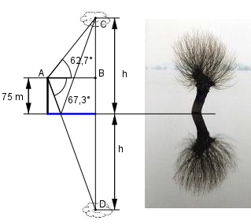

Aufgabe 116 Von einem Punkt aus, der 75 m über dem Wasser- spiegel eines Sees liegt, erscheint eine Wolke unter dem Erhebungswinkel 62,7°. Ihr Spiegel- bild unter dem Tiefenwinkel 67,3°. Wie hoch steht die Wolke?

Das Bild dient zur Veranschaulichung eines Spiegelbildes. Im Dreieck ABC: h - 75 tan 62,7° = -------- |*AB AB AB * tan 62,7° = h – 75 |:tan 62,7° h - 75 h - 75 AB = ------------ = --------- tan 62,7° 1,9375 Im Dreieck ADB: h + 75 tan 67,3° = -------- |*AB AB AB * tan 67,3° = h + 75 |:tan 67,3° h + 75 h + 75 AB = ----------- = --------- tan 67,3° 2,3906 Gleich gesetzt: h – 75 h + 75 --------- = --------- 1,9375 2,3906 (h – 75) * 2,3906 = (h + 75) * 1,9375 h * 2,3906 – 179,3 = h * 1,9375 + 145,3 |+179,3 h * 2,3906 = h * 1,9375 + 322,6 |-h * 1,9375 h * 2,3906 – h * 1,9375 = 324,6 h * (2,3906 – 1,9375) = 324,6 h * 0,4531 = 324,6 | :0,4531 324,6 h = -------- = 716,4 m 0,4531